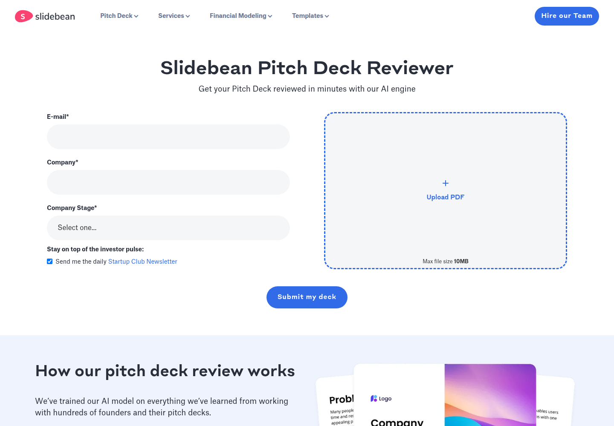

Profile
- Company
- Slidebean
- Url
- https://slidebean.com/pitch-deck-reviewer
- Source Category
- AI pitch-deck reviewers
- Research Status
- Deep Cited Research / Draft Complete
- Current Status
- live - fetched https://slidebean.com/pitch-deck-reviewer directly on 2026-07-19, HTTP 200; note the footer of this specific subpage reads '© Copyright 2024 Slidebean Incorporated', slightly stale relative to fetch date, but the wider Slidebean product suite (pitch deck software, financial modeling, services) is actively operating with a full authenticated web app - no shutdown/dead signals found.
- Founded Launch Year
- 2013 (mid-2013), founded by José 'Caya' Cayasso along with Jose Enrique Bolanos and Vinicio Chanto. Source: Crunchbase person profile for Jose Cayasso; getlatka.com.
- Company Age
- ~13 years (as of 2026)
- Hq Country
- Costa Rica (San Jose) with a US office in New York City (115 Broadway); site footer: 'Made with in New York City and San Jose'
- Operating Area
- global - site localized in English/Spanish/French/German
- Target Users
- startup founders across all stages (Pre-Seed through Series B, per the reviewer's stage selector) needing pitch decks, financial models, and fundraising services
- Product Category
- AI pitch/deck review (free tool); pitch deck design software & templates; financial modeling software/services; fundraising services/consulting
Product Flows
- Swipe Card Interface
- not found / no evidence of swipe UI; reviewer is a simple upload form (email, company, stage, PDF upload)
- Mutual Match
- not found / no public source
- Ai Matching Scoring
- not found / no evidence of an investor-matching engine; Slidebean does not appear to match founders with specific investors algorithmically
- Ai Deck Scoring
- yes
- Founder To Founder Flow
- not found / no evidence
- Founder To Investor Flow
- yes - investor finder/CRM
- Project Profiles
- not found / no public source
- Messaging Collaboration
- yes - collaboration and analytics
- Mobile App
- not found / no App Store/Google Play listing located; web-based SaaS
- Web App
- yes
Security & Documents
- Nda Gated Unlock
- not found / no public source (original pass marked 'not found' already, confirmed)
- Data Room
- not found / no public source
- E Signature
- not found / no public source (original pass marked 'yes' with no corroborating evidence found; likely automated false positive - downgraded to not found)
- Meeting Prep Ai Briefing
- not found / no public source
Pricing, Funding & Traction
- Pricing Model
- Free AI pitch deck reviewer (lead-gen tool); paid Pitch Deck Software subscription and separately priced professional services (Pitch Deck Design, Financial Modeling, Presentation Design) - exact price points not captured in scrape (see slidebean.com/pricing)
- Business Model
- Freemium SaaS (Pitch Deck Software subscriptions) plus a higher-margin professional-services arm (done-for-you pitch deck design and financial modeling)
- Total Funding
- $1.47M total funding across 5 rounds from 11 investors per Crunchbase-derived search result (some secondary sources cite a differing $927.5K figure at a $2.5M valuation in 2024 - likely reflecting different reporting scopes/time periods)
- Funding Rounds
- Seed round plus at least one Grant round identified via Crunchbase funding-round pages (crunchbase.com/funding_round/slidebean-seed, crunchbase.com/funding_round/slidebean-grant); exact dates/amounts per-round not fully itemized in available search results
- Investors
- Y Combinator is listed as an investor (per slidebean.com/investor/y-combinator); Slidebean also went through 500 Startups (Batch 11) and Start-Up Chile accelerator programs
- Funding Source Type
- Seed VC + accelerator (Y Combinator, 500 Startups, Start-Up Chile) + grants
- Last Funding Date
- not found / precise date not located in this pass
- Users Traction
- Company states its methodology has 'helped companies raise more than $350 million in venture capital' (aggregate across all customers using the Slidebean 'formula', not Slidebean's own funding)
- Deals Funding Facilitated
- $350M+ in venture capital raised by customers using Slidebean's deck methodology/services (company claim)
- Partnerships
- Y Combinator, 500 Startups, Start-Up Chile (accelerator/investor relationships)
- Media Coverage
- Built In NYC company profile (builtinnyc.com/company/slidebean); CB Insights company profile; PitchBook profile; getlatka.com revenue/valuation profile; founder Jose Cayasso interviewed by mogulmillennial.com
- Product Update Activity
- active - full product suite (software, templates, blog, YouTube lessons, Financial Modeling Bootcamp, case studies) continuously maintained; note the specific pitch-deck-reviewer subpage footer is dated 2024, a minor staleness signal on that one page only
- Acquisition Rebrand History
- not found / no evidence of acquisition or rebrand; consistently operating as 'Slidebean Incorporated' since 2013
Scores
- Product Overlap Score
- 3
- Feature Maturity Score
- 4
- Market Traction Score
- 4
- Funding Strength Score
- 2
- Ai Depth Score
- 2
- Nda Security Strength Score
- 1
- Network Moat Score
- 3
- Direct Threat Score
- 2.8
- Source Confidence
- High
Evidence Notes
- Primary Sources
- https://slidebean.com/pitch-deck-reviewer
https://slidebean.com/about
https://slidebean.com/investor/y-combinator - Secondary Sources
- https://www.crunchbase.com/organization/slidebean
https://www.crunchbase.com/person/jos-cayasso
https://www.cbinsights.com/company/slidebean
https://www.builtinnyc.com/company/slidebean
https://getlatka.com/companies/slidebean
https://pitchbook.com/profiles/company/63652-60
https://www.mogulmillennial.com/jose-caya-slidebean/ - Unsupported Claims
- '$350 million in venture capital' raised by customers is a company-published aggregate claim, not independently itemized or audited.
- Contradictions
- Two differing total-funding figures found across sources ($1.47M over 5 rounds per one Crunchbase-derived search summary vs. $927.5K at a $2.5M valuation per a 2024-dated secondary source) - likely different snapshots in time or different metrics (total raised vs. most recent round context); flagged rather than resolved.
- Last Checked
- 2026-07-19
- Notes
- Slidebean is a long-running (13-year), Y Combinator-backed pitch deck software company for which the AI reviewer is a free lead-gen tool sitting in front of paid software and services, not a matchmaking platform. It has real venture backing and a long track record but essentially no BizMatch-relevant matchmaking, NDA, or network features - its threat is on deck-review/creation quality and brand trust, not on the Three-Paths matchmaking model.
Registration Flow
Research date: 2026-07-19. Screenshots are sanitized public copies from the private registration-flow capture set; credentials, tokens, verification links/codes, browser chrome, and private identifiers are not intentionally published.
Outcome: stopped at required truthful-details / submission boundary.
Stop point: Untouched Slidebean Pitch Deck Reviewer form at https://slidebean.com/pitch-deck-reviewer, before entering the authorized email, inventing or submitting company/stage information, changing the default newsletter preference, selecting or uploading a PDF, enabling or clicking 'Submit my deck', creating an account, requesting verification, or beginning any fundraising-oriented review submission
Blocker / boundary: The official free reviewer does not expose a standalone registration step before requiring a substantive fundraising-oriented submission: a real company name, a truthful financing stage, and the company's pitch deck PDF. Uploading or submitting a pitch deck is explicitly prohibited by the evidence-only and fundraising/application stop conditions, and the authorized credential file does not provide company or stage data that could truthfully complete the form.
- Official free AI pitch-deck reviewer and mandatory submission stop point. Slidebean's official Pitch Deck Reviewer page opens directly on an untouched form requesting an email, company name, company stage (Pre-Seed, Seed, Series A, or Series B), and a required PDF pitch-deck upload of up to 10 MB. The page describes the upload as the first step toward pitching to investors and provides a 'Submit my deck' action that remains disabled until the required fields and file are supplied. Capture stopped before entering private or invented company/fundraising data, uploading a deck, or submitting the form.
